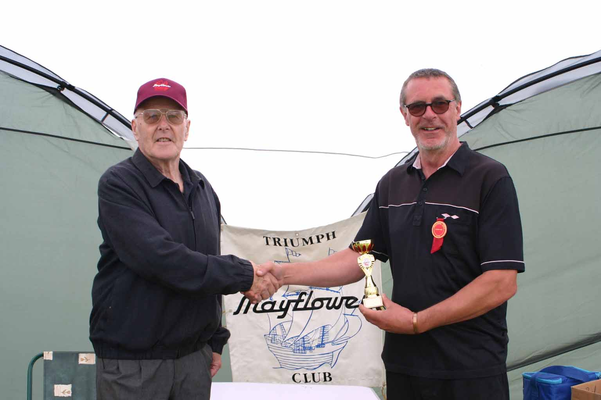

<link href="{{ site.baseurl }}/events/article.css" rel="stylesheet" type="text/css">
<main>
    <article>
        <ol id="breadcrumb">
            <li>
                <a href="{{ site.baseurl }}/">Home</a>
            </li>
            <li>
                <a href="{{ site.baseurl }}/events">Events</a>
            </li>
            <li>
                <a href="{{ site.baseurl }}/events/rallies">TMC Rallies</a>
            </li>
            <li>Northern Rally 2019</li>
        </ol>
        <div id="content">
            <h1>Northern Rally – Messingham Show</h1>
            <h2>2<sup>nd</sup> June 2019</h2>
            <p>The clock struck 7 AM and it was time to navigate our way to Messingham. The weather forecast for Sunday 2<sup>nd</sup> June was showers, so the Triumph Mayflower Club gazebo was essential.</p>
            <p>The journey was kind and the location was easy to find. On arrival at the entrance gate we were given our car pass and an envelope with passes for the other Mayflower owners, as the classic car show was limited to 100 vehicles in the show grounds.</p>
            
            <p>Stephen Coulman, Messingham show secretary and Mayflower owner, greeted us and had already parked his Mayflower, so John Castle and I, with a bit of help from a few other people, constructed the gazebo and securely tied-down all corners in readiness for club members and whatever the weather decided to do.</p>
            
            <p>The 114<sup>th</sup> Messingham Show had a packed programme throughout the day and something for all the family, a great day out. Hopefully everyone enjoyed the horsepower on display!</p>
            <p>The Lincolnshire Twirlers and Vander Wheel of Death had to cope with the wind and rain, making their routines a true spectacle and more tricky than normal. When we did have heavy showers, members of the public sheltered under the gazebo! It did not put the show jumpers off, the screams from the fair ground rides could still be heard, and afterwards you might sample the food and beer, depending on how your stomach was fairing.</p>
            <p>The Classic Car parade was at 1:15 PM and certainly worth a look, as the range of vehicles on display was very interesting. As the music from the Scunthorpe and District Pipe band finished it was decided to give out prizes, as we now had two Mayflowers on display. Stephen Coulman’s OUM 864 and Tony Gregory’s 634 YUG, both being early examples looked great paired together.</p>
            
            
            
            <p>The Chairman’s Cup was awarded to Stephen as a thank you for organising and inviting the club to a great new venue for the Northern Rally and also for bringing his car. Tony received the Best in Show prize and with that the Triumph Mayflower Club Peter Benfield Northern Rally trophy, as his car was in great condition and also because he had attended at Wroxall Abbey. He had travelled up on the day from Leicestershire to attend the Messingham show as well, a fair way to travel at vintage speeds!</p>
            
            <p class="imageCaption">Stephen Coulman – Chairman’s Cup</p>
            
            <p class="imageCaption">Tony Gregory – Best in Show</p>
            <p>The only thing left to do was take down the gazebo (shaking off the rain!) and safely put it away ready for the next show. John and I said thank you to Stephen and Tony and goodbye, wishing them a safe journey home as the weather was looking threatening. The heavy rain dually arrived on the way home, the spray from other vehicles was quite bad, but we safely arrived back in a timely manner.</p>
            <p>John Banks</p>
            <p>Rally secretary</p>
        </div>
    </article>
    <aside>
        <h2>Members’ cars in attendance</h2>
        <ul class="disableListStyles">
            <li>
                <h3>Stephen Coulman</h3>
                <div>
                    <div class="numberPlateMarker">OUM 864</div>
                </div>
                <div>
                    <div class="awardMarker">Chairman’s Prize</div>
                </div>
            </li>
            <li>
                <h3>Tony Gregory</h3>
                <div>
                    <div class="numberPlateMarker">634 YUG</div>
                </div>
                <div>
                    <div class="awardMarker">Best in Show</div>
                </div>
            </li>
        </ul>
    </aside>
</main>
